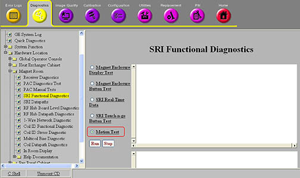

Operating Documentation
Direction 5670000, Rev# 1
Optima MR450w 1.5T Service Methods
Module Version 3.0, Version Date 8/19/08
Operating Documentation |
Diagnostics >> System Function >> Patient Handling >> SRI Functional Tests
Diagnostics >> Hardware Location >> Magnet Room >> SRI Functional Diagnostics
Illustration 1: SRI Motion Test

The SRI Motion test moves the cradle to home and through the end of travel switch location using different speeds and accelerations to ensure operation of the cradle.
The cradle will perform the following series of moves:
The cradle moves to home (in case home isn't known, it sets the home position by moving to home).
The cradle moves past the configured end of travel location. This verifies that the configuration for scan range is set to the same value as the position where the physical end of travel switch block is installed.
The cradle moves 1 meter from the home switch location using a faster speed (300 mm/s) and faster acceleration and deceleration (300 mm/s/s).
The cradle moves 0.5 meters further into the bore using the faster speed and acceleration.
SRI
motor
gearbox
encoders
home and end of travel switches
belt
Not applicable.
For this test, the table needs to be docked and up.
This diagnostic is available from the Common Service Desktop when required system components are available.
A complete system is required. No special hardware or configurations are necessary.
No additional equipment is required.
SRI
motor
gearbox
encoders
home and end of travel switches
belt
This diagnostic presents no human or equipment safety concerns.
FE must be on-site. The test cannot be executed remotely.
| NOTE: | This test may not be run remotely as it causes table motion. |
Select the Motion Test .
Click [Run].
Ensure that the diagnostic passes by reviewing the status in the Test Results table.
If any of the moves fails to complete successfully, the test will stop and an error will be logged.
Table 1: Problem / Solution Table
| Fault | Problem Description | GE Field Action |
| 1. Clutch slip tolerance errors | 1. Take appropriate action based upon extended error messages. | |
| 2. Velocity tolerance errors | 2. Take appropriate action based upon extended error messages. | |
| 3. Position tolerance errors | 3. Take appropriate action based upon extended error messages. | |
| 4. Motor controller faults | 4. Take appropriate action based upon extended error messages. | |
| 5. Communication errors | 5. Take appropriate action based upon extended error messages. |
For further information, refer to the System Block Diagrams.
TPS reset is required prior to scanning.